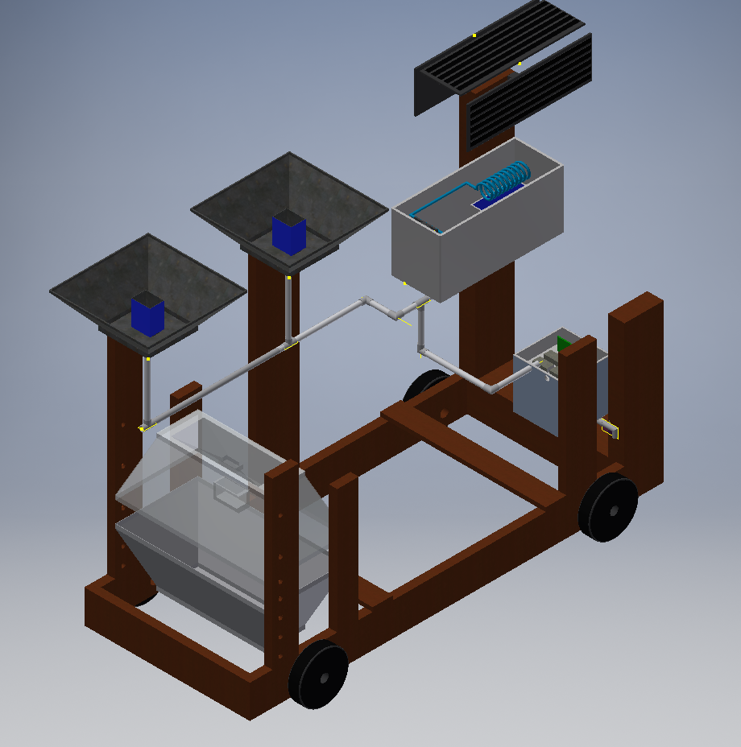
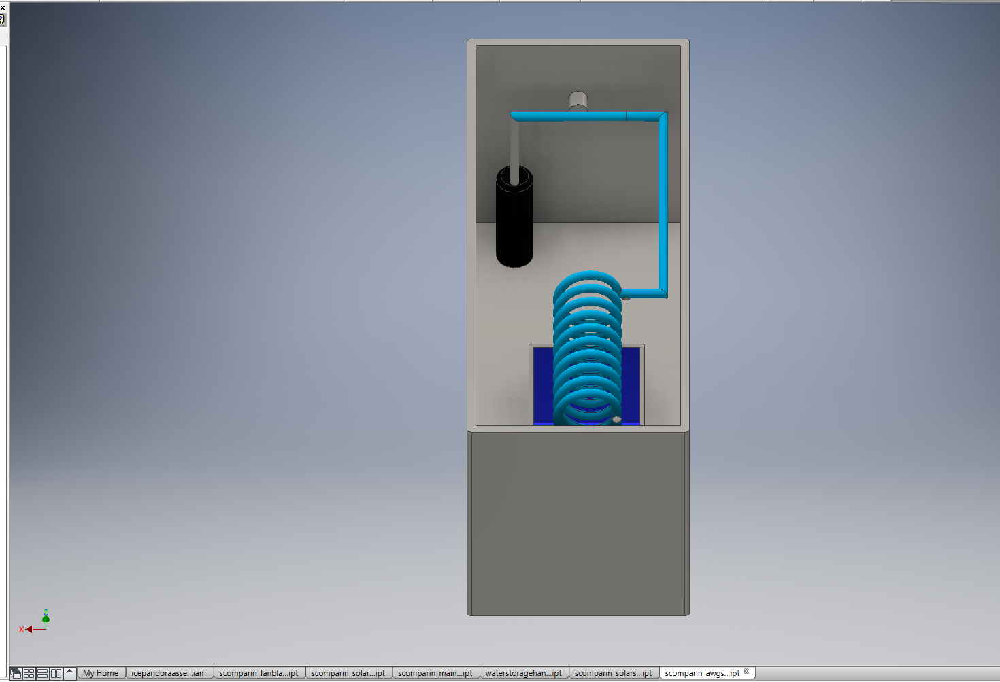
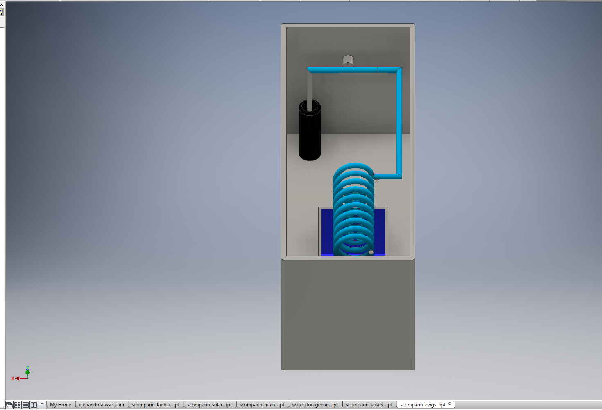

Entrepreneur Project: May 2016, Introduction to Engineering Design (IED)
The objective of this project was simple- to design a completly new product or a major innovation. My team decided to try to solve a well known problem- lack of clean, drinkable water in third-world countries. We researched three previous solutions: the solar still, rain/dew collector, and atmospheric water generator (AWG). Afterwards, my teammate and I in IED modeled the solution in AutoDesk Inventor, and the two teammates in CSP designed a Cloud9 website to highlight the product. Our product is named Aquaharvester and is a combination of the solar still, rain/dew collector, and AWG with some substantial innovations added. It is portable, with a wooden frame mounted on four large, rubber wheels. The solar still is made of solid, durable plastic, and features an adjustable height using pegs. The rain/dew collector were improved by using lightweight sheet metal instead of plastic, and the addition of a sealed ice container in the center of the metal. We overcame our greatest challenge, cost, by implementing solar panels and recycled materials such as a computer fan, water pump, and plastic tubing. I managed the product documentation, presentation, and team collaboration, and was responsible for creating the improved frame, AWG fan and rain collector in AutoDesk Inventor. I was able to combine mechanical and environmental engineering skills by minimizing energy and material use within the project design, while increasing water output. Our project was successful and earned an A based on the criteria on the project rubric.
From left to right: AWG, solar panels and tubing, condensation collector, and the final Aquaharvester design.
 
